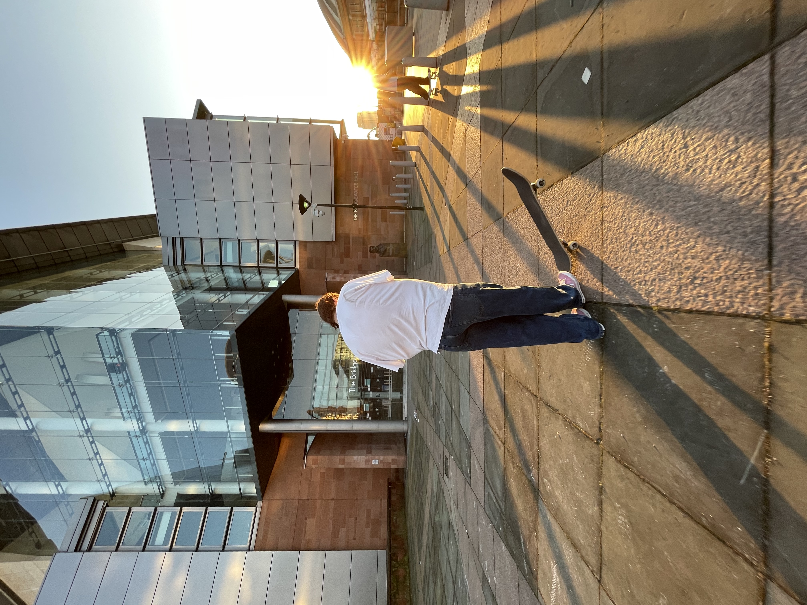

My name's Omar, I'm 22 years old and from Manchester. I love basketball, skateboarding, photography and much more.
I started playing basketball in high school and continued to play as I was recruited to an academy, where I played
alongside some of the best players in the country. I continue to play today and hold individual training sessions for players.

When Covid-19 hit, all basketball was cancelled, forcing me to take a break from it. I decided to try skateboarding
as a few of my friends skated. It was tough at first, but once I landed my first trick I was hooked. Ever since then
I've been skating with my friends around Manchester, not to mention falling over and over again.
Another result of Covid-19 was my beginnings in photography. A close friend of mine - a photographer, inspired me to try my hand.
Before trying it I had never understood photography and what it was really about, anyone can just take a picture right?
Although this is true, there's a deeper more personal meaning behind it. I'm still at the start of my photography journey
but I'm excited to see where it can take me.